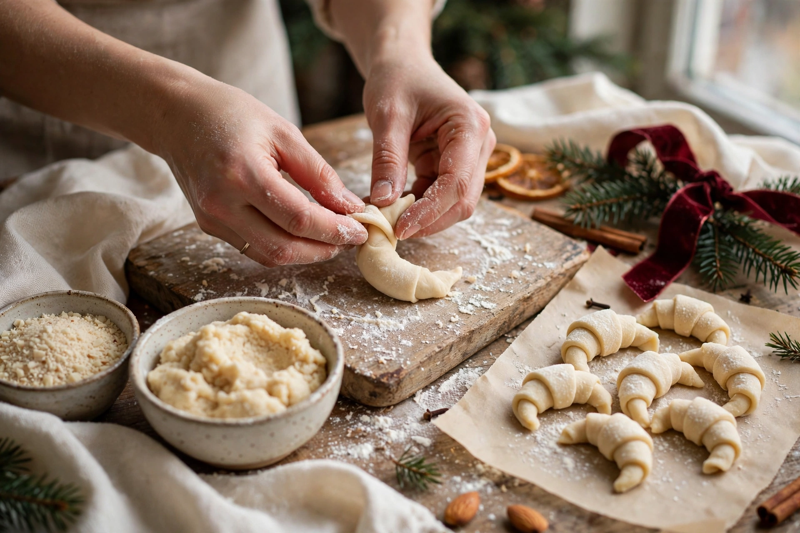

Vanillekipferl, Just Like Grandma's
Vanilla crescents are as much a part of Christmas as the tree itself. This recipe makes them every bit as tender and crumbly as Grandma's – promise. The secret: cold butter, fine almonds, and rolling them in vanilla sugar while they are still warm.

Contents
Ingredients
Instructions
- Mix the flour, almonds, sugar, vanilla sugar and salt. Add the cold butter and quickly knead everything into a smooth dough.
- Wrap the dough in plastic wrap and rest it in the fridge for 1 hour.
- Preheat the oven to 350°F (175°C). Take small portions of dough, roll them into ropes and bend them into crescents.
- Place on a parchment-lined baking sheet and bake for 10–12 minutes, until the tips are just turning golden.
- Mix the confectioners' sugar with the vanilla sugar. Carefully roll the warm crescents in it and let them cool on a wire rack.

Tip
The crescents are very fragile while warm – handle them gently when rolling. Stored in a tin, they keep for 3–4 weeks and get more tender every day.
📌 Find more cookie ideas on our Pinterest profile:
Cookie Recipes on Pinterest
Cookie Recipes on Pinterest